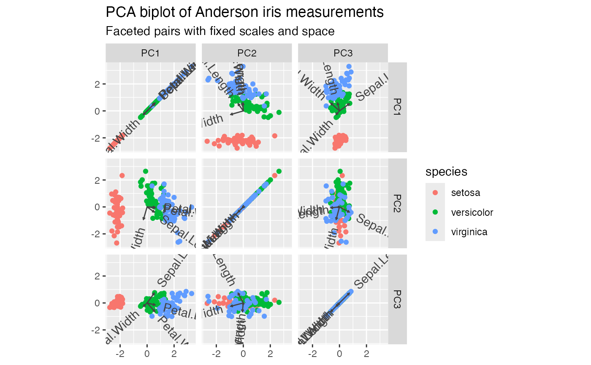
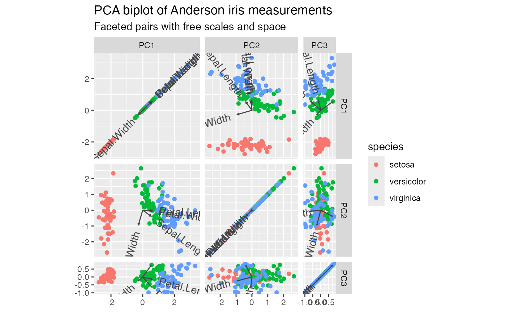
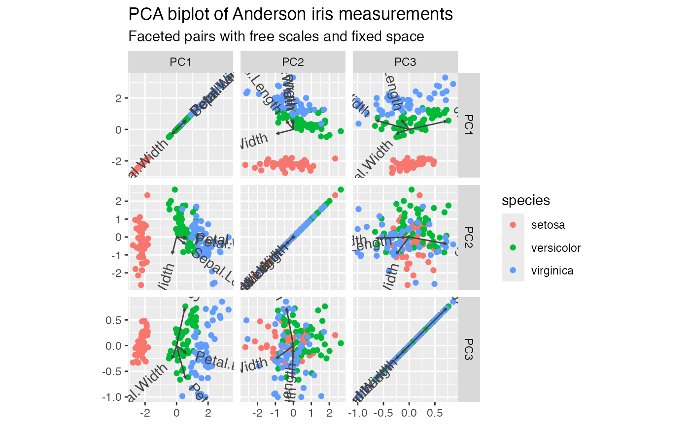
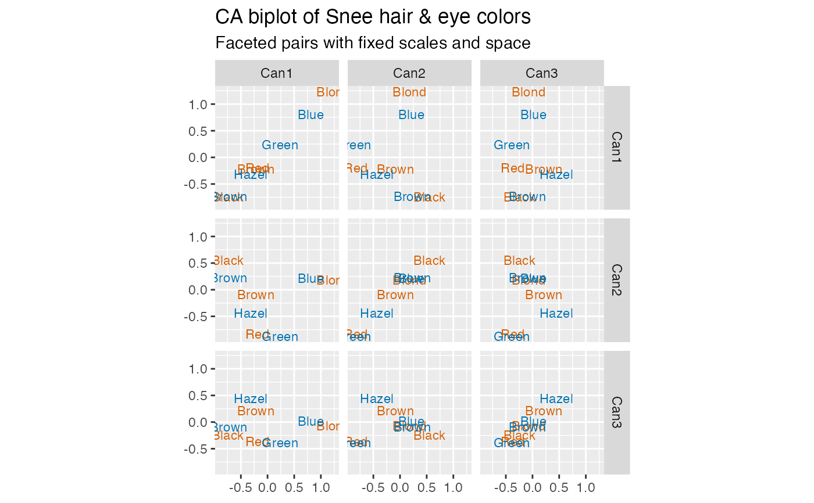
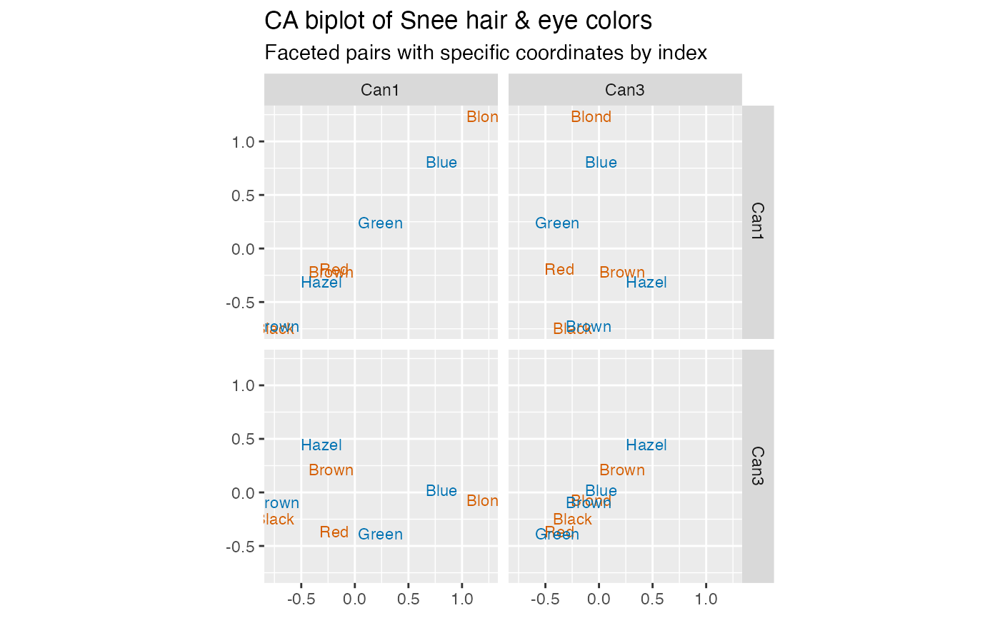

Facet biplots using all ordered pairs of scaffolding coordinates in an ordination object.
Arguments
- coords
Coordinates to include, in one of several formats:
NULL(default): all coordinatesInteger scalar: number of first coordinates
Integer vector: subset of coordinates
Character scalar: single coordinate name
Character vector: subset of coordinate names
- scales
A character scalar indicating whether all panels share the same x and y coordinate scales (
"fixed") or whether the x and y scales are free to differ between panels ("free"). By default,NULL. Unlikeggplot2::facet_grid(), no x- or y-specific values are available.- space
A character scalar indicating whether all panels are the same size (
"fixed") or whether each panel is sized proportionally to the ranges of its coordinate scales ("free"). By default,NULL. Unlikefacet_grid(), no x- or y-specific values are available.
Value
A FacetOrd ggproto object to be added to a ggbiplot().
Details
facet_ord() is intended to be added to a plot produced by
ggbiplot(), which stores the recovered ordination coordinates in the
fortified data of each layer. Adding facet_ord() replaces the x and y
mappings with internal panel-specific columns, so that the coordinates
mapped in the original call are used only to set the coordinate system.
As in ggplot2::facet_grid(), the scales and space parameters control
the scales and sizes of the panels. Setting either parameter to a value
also sets the other to the same value, unless both are set; if neither is
set, both default to "fixed". Setting scales = "fixed" obtains the same
plot regardless of space. Pairing scales = "free" with space = "fixed" warps aspect ratios away from 1 and is discouraged though not
warned against.
Examples
# scaled PCA of Anderson iris measurements
iris[, -5] %>%
prcomp(scale = TRUE) %>%
as_tbl_ord() %>%
confer_inertia(1) %>%
augment_ord() %>%
mutate_rows(species = iris$Species) %>%
print() -> iris_pca
#> # A tbl_ord of class 'prcomp': (150 × 4) · (4 × 4)´
#> # 4 coordinates: PC1, PC2, ..., PC4
#> # Rows (principal, 100%): [ 150 × 4 | 2 ]
#> PC1 PC2 PC3 PC4 | .element species
#> [434.9] [136.2] [21.87] [3.087] | <chr> <fct>
#> 1 -2.26 -0.478 0.127 0.0241 | active setosa
#> 2 -2.07 0.672 0.234 0.103 | active setosa
#> 3 -2.36 0.341 -0.0441 0.0283 | active setosa
#> 4 -2.29 0.595 -0.0910 -0.0657 | active setosa
#> 5 -2.38 -0.645 -0.0157 -0.0358 | active setosa
#> ⋮ ⋮
#> # Columns (standard, 0%): [ 4 × 4 | 4 ]
#> PC1 PC2 PC3 PC4 | name center scale
#> [1] [1] [1] [1] | <chr> <dbl> <dbl>
#> 1 0.521 -0.377 0.720 0.261 | Sepal.Len… 5.84 0.828
#> 2 -0.269 -0.923 -0.244 -0.124 | Sepal.Wid… 3.06 0.436
#> 3 0.580 -0.0245 -0.142 -0.801 | Petal.Len… 3.76 1.77
#> 4 0.565 -0.0669 -0.634 0.524 | Petal.Wid… 1.20 0.762
#> # ℹ 1 more variable:
#> # .element <chr>
# facet the first three principal components (by default fixed space and scales)
iris_pca %>%
ggbiplot() +
facet_ord(coords = 3) +
geom_rows_point(aes(color = species)) +
geom_cols_vector(aes(label = name), color = "#444444") +
ggtitle(
"PCA biplot of Anderson iris measurements",
"Faceted pairs with fixed scales and space"
)

# free space (by default frees the scales)
iris_pca %>%
ggbiplot() +
facet_ord(coords = 3, space = "free") +
geom_rows_point(aes(color = species)) +
geom_cols_vector(aes(label = name), color = "#444444") +
ggtitle(
"PCA biplot of Anderson iris measurements",
"Faceted pairs with free scales and space"
)

# free scales, fixed space: panel scales determined by coordinates (discouraged)
iris_pca %>%
ggbiplot() +
facet_ord(coords = 3, scales = "free", space = "fixed") +
geom_rows_point(aes(color = species)) +
geom_cols_vector(aes(label = name), color = "#444444") +
ggtitle(
"PCA biplot of Anderson iris measurements",
"Faceted pairs with free scales and fixed space"
)

# correspondence analysis of combined hair and eye color data
haireye <- as.data.frame(rowSums(HairEyeColor, dims = 2L))
haireye %>%
ordinate(MASS::corresp, cols = everything(), nf = 3L) %>%
confer_inertia("symmetric") %>%
print() -> hec_ca
#> # A tbl_ord of class 'correspondence': (4 × 3) · (4 × 3)´
#> # 3 coordinates: Can1, Can2, Can3
#> # Rows (symmetric, 50%): [ 4 × 3 | 2 ]
#> Can1 Can2 Can3 | name .element
#> [0.4569][0.1491] [0.051] | <chr> <chr>
#> 1 -0.746 0.556 -0.246 | Black active
#> 2 -0.219 -0.0846 0.216 | Brown active
#> 3 -0.192 -0.828 -0.368 | Red active
#> 4 1.24 0.180 -0.0718 | Blond active
#> # Columns (symmetric, 50%): [ 4 × 3 | 2 ]
#> Can1 Can2 Can3 | name .element
#> [0.4569][0.1491] [0.051] | <chr> <chr>
#> 1 -0.728 0.229 -0.0957 | Brown active
#> 2 0.810 0.215 0.0209 | Blue active
#> 3 -0.315 -0.434 0.445 | Hazel active
#> 4 0.239 -0.878 -0.388 | Green active
# facet the first three correspondence coordinates
hec_ca %>%
ggbiplot() +
facet_ord(coords = 3) +
geom_rows_text(aes(label = name), color = "#D55E00", size = 3) +
geom_cols_text(aes(label = name), color = "#0072B2", size = 3) +
ggtitle(
"CA biplot of Snee hair & eye colors",
"Faceted pairs with fixed scales and space"
)

# facet specific correspondence coordinates by index
hec_ca %>%
ggbiplot() +
facet_ord(coords = c(1, 3)) +
geom_rows_text(aes(label = name), color = "#D55E00", size = 3) +
geom_cols_text(aes(label = name), color = "#0072B2", size = 3) +
ggtitle(
"CA biplot of Snee hair & eye colors",
"Faceted pairs with specific coordinates by index"
)

# facet specific correspondence coordinates by name
hec_ca %>%
ggbiplot() +
facet_ord(coords = c("Can1", "Can3")) +
geom_rows_text(aes(label = name), color = "#D55E00", size = 3) +
geom_cols_text(aes(label = name), color = "#0072B2", size = 3) +
ggtitle(
"CA biplot of Snee hair & eye colors",
"Faceted pairs with specific coordinates by name"
)